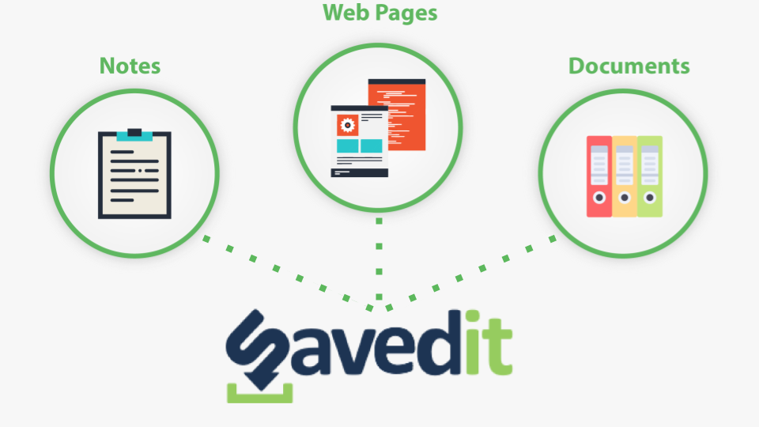

SavedIt is in private beta testing. We'll invite you soon!
Save a web page, find and re-read it easily later, even if the page disappeared or changed in the meantime!
Collect important academic papers or technical documents? Store them safely in SavedIt!
Don't lose your own unique thoughts! Keep them in SavedIt. You can even add them to a saved web page or document!